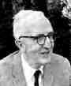

Marston Morse developed variational theory in the large with applications to equilibrium problems in mathematical physics, a theory which is now called Morse theory and forms a vital role in global analysis.
Morse received his M.A. from Colby College in 1914 and his Ph. D. from Harvard in 1917 where his dissertation was directed by Birkhoff. His thesis title was Certain Types of Geodesic Motion of a Surface of Negative Curvature. Morse taught briefly at Harvard before entering military service for the period of World War I. He then held posts at Cornell (1920-1925) and Brown University (1925-1926). From 1926 until 1935 he was at Harvard moving to the Institute for Advanced Study Princeton for the rest of his career until he retired in 1962.
Morse developed variational theory in the large with applications to equilibrium problems in mathematical physics. This is now called Morse theory. It is important in the field of global analysis which is the study of ordinary and partial differential equations from a global or topological point of view. It builds on the classical results in the calculus developed by Hilbert and his students.
Morse's major works include Functional topology and abstract variational theory (1938), Topological methods in the theory of functions of a complex variable (1947) and Lectures on analysis in the large (1947).
What distinguishes Morse from many other famous mathematicians is his single-minded persistence with a single theme throughout his life. However this theme, Morse theory, is perhaps the single greatest contribution of American mathematics.
Morse received a number of awards for his work. For example in 1933
the American Mathematical Society awarded him the Bôcher Prize for
his memoir The foundations of a theory of the calculus of variations
in the large in m-space published in Transactions of the American
Mathematical Society in 1929.
Marston Morse was the President of the American Mathematical Society
in 1941 - 1942.
He was the American Mathematical Society Colloquium Lecturer in 1931.